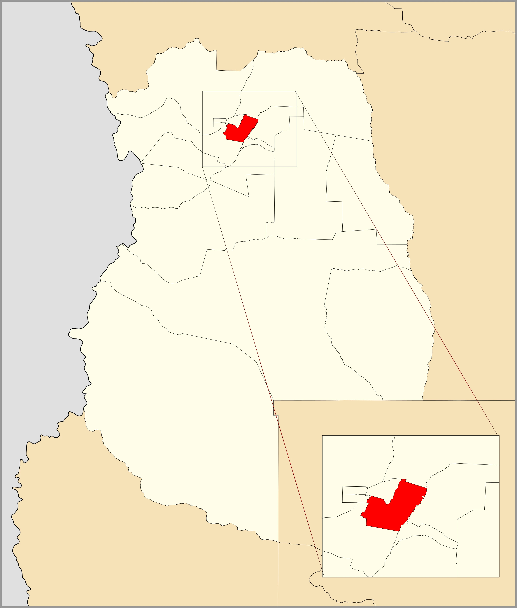
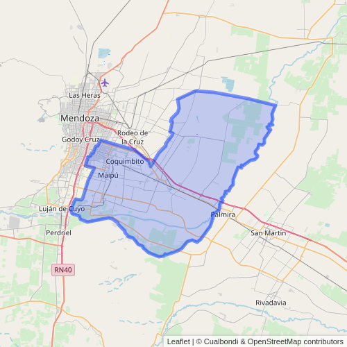

Maipú
A place of olive trees, a place of vineyards...
Department of Maipú
It is part of Greater Mendoza, constituting itself as the extension of the agglomerate to the southeast of it.
It is the "Cradle of Wine" and together with Luján de Cuyo, it forms the main winery center of the province, with numerous historical and current wineries.
Maipú Location
 Image Gallery


Number of visits: